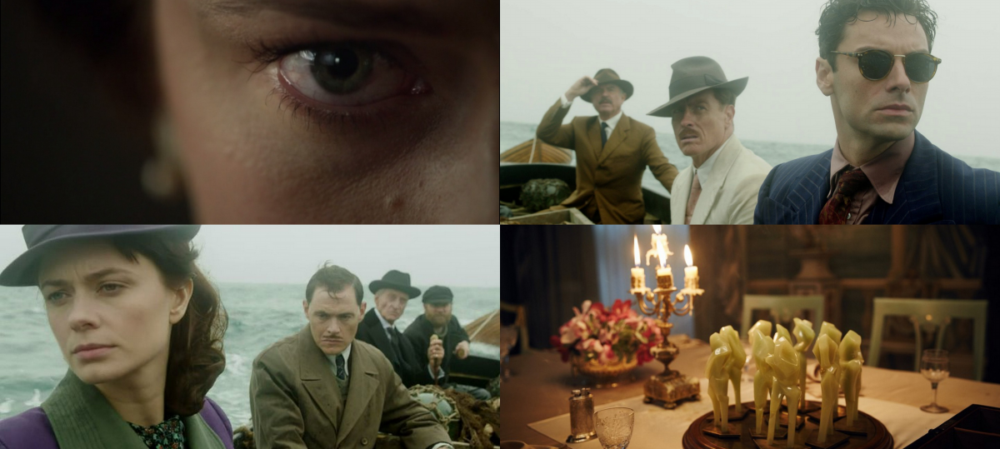

Les british sont les meilleurs. Que les fans de Sherlock et autres Whovian nous laissent tranquilles, ici on parlera des autres must-see du petit-écran anglais : séries, mini-séries ou téléfilms, nouveautés ou valeurs sûres.
Produite par la BBC à l’occasion du 125ème anniversaire de la naissance d’Agatha Christie, And Then There Were None est l’adaptation de son roman le plus célèbre, Les Dix Petits Nègres.
Synopsis: Rapidement, c’est l’histoire de 10 personnes qui se retrouvent seules sur une île, invitées par un mystérieux et inconnu A.N. Owen, l’hôte de la maison dans laquelle, un à un, ils crèveront comme des petites merdouilles.
C’était le synopsis simplifié.
Nègre n°3 : Pourquoi tu penses qu’il nous a tous réunis dans cette maison, comme ça ?
Nègre n°1 : Aucune idée…
Nègre n°7 : Je pense qu’il essaie de faire une mise en abyme.
Nègre n°5 : Putain encore !
Nègre n°7 : Mais là il a pas bien compris l’histoire en fait.
Nègre n°2 : Et pourquoi il a pris que des blacks ?
Nègre n°10 : Il a dit qu’il avait rien bidé au principe, t’es sourd ?!
Nègre n°1 : Hé, calmez-vous là. Z’allez pas commencer…
Nègre n°10 : Bon déjà personne t’a sonné, tu vas lais-
Nègre n°8 : Oh mais vos gueules enfin ! Et l’autre qui ne sait plus comment enchaîner…
Nègre n°4 : Tous aussi stupides. Au moins, il essaie des trucs. Et puis, même s’il a mal compris le titre, il sait compter. C’est déjà ça.
Nègre n°6 : Ah ouais ?
Nègre n°9 : Ouais.
Nègre n°3 : Bon c’est pas ça mais est-ce qu’à un moment il va nous expliquer ce qu’on fout là ? Parce qu’avec cette intro interminable…
Nègre n°7 : C’est le 125ème anniversaire d’Agatha Christie et BBC a sorti du lourd.
Nègre n°2 : Ah, je l’aime pas du tout elle. J’ai lu son livre le plus connu là, ça m’a rappelé des trucs… Trop gênant sérieux.
Nègre n°3 : S’il fait ça, c’est parce qu’il a aimé, vous pensez ?
Nègre n°5 : J’espère pas ! Il parle que de ses kiffes… aucune critique ce mec.
Nègre n°10 : Moi je dis que s’il nous a enfermés tous comme ça, et avec vous, il doit pas trop nous blairer !
Nègre n°9 : Ouais.
Nègre n°6 : Hé mais il est où le n° quat- ah t’étais là mdr.
Nègre n°7 : Le connaissant, il a dû aimer la réalisation. Même s’il aime pas trop les polars, ce truc envoie grave. C’est hyper moderne, les plans sont sublimes, pis ces couleurs marécageuses donnent à l’ambiance déjà froide comme une noirceur angoissante et une atmosphère transcendante.
Nègre n°2 : ça t’a pas rappelé Shutter Island au début ? Moi si lol.
Nègre n°4 : j’ai direct fait le rapprochement avec SAW, même si ça n’a rien d’une série d’horreur.
Nègre n°6 : Les mecs, où est n°10 ?
Nègre n°4 : Vais le chercher.
Nègre n°8 : Il a peut-être aimé l’adaptation mais j’suis sûr qu’il a pas lu le livre.
Nègre n°1 : ça doit être pour ça qu’il a kiffé. Comme il connaît pas l’histoire, le suspense est resté complet. (Ouais je l’ai pas lu non plus hihi.)
Nègre n°8 : Moi je l’ai lu mais ça m’a rien gâché. Y a quelques éléments qui diffèrent, mais ça reste intéressant de voir comment l’œuvre est revisitée, modernisée peut-être, tout en y restant fidèle.
Nègre n°7 : J’en connais à qui ça a pris moins de temps de le lire que de regarder la série.
Nègre n°5 : Elle dure combien ?
Nègre n°2 : Heu… 3 heures. Enfin, 3 épisodes d’une heure lol.
Nègre n°1 : C’est une mini-série.
Nègre n°9 : Ouais.
Nègre n°6 : Hé, c’est le n°3 qui est allé chercher le n°10 ? Je pensais que c’était le n°4…
Nègre n°1 : Je crois qu’il est parti faire pipi.
Nègre n°7 : Non mais ça aurait pu durer 15 heures, il les aurait enfilé l’un après l’autre les épisodes. T’as vu le casting de ouf ? Chaque perso est ultra bien amené, et les interprétations sont toutes aussi justes. Je pense que c’est le point fort de cette série.
Nègre n°8 : Y a Tywin Lannister, le bogoss dans Le Hobbit et fucking Sam Neil de Jurassic Park !
Nègre n°5 : Et la bombasse putain ?! T’as vu son cul ?! Wooooh !
Nègre n°6 : T’as pas envie de chercher les autres toi aussi ?
Nègre n°5 : T’as raison, j’y vais, c’est relou ici.
Nègre n°9 : Ouais.
Nègre n°8 : Sinon, je pense pas que l’acting soit le seul point fort de la série. L’écriture aussi est impeccable. Et l’œuvre ne se résume pas qu’à un simple huis-clos sanglant, c’est une étude sombre et complexe de la justice, dans une ambiance post-première guerre, aux portes de la seconde. C’est aussi le portrait de personnes rongées par les tourments et la culpabilité, devenues malgré elles les objets d’un jeu extrême, entre perversité et justice, à la limite de l’expérience sociale et psychiatrique.
Nègre n°7 : Heu… d’accord…
Nègre n°1 : Tu trouves pas comment surenchérir, n°7 ?
Nègre n°7 : Pff.

Nègre n°2 : Moi j’ai trouvé l’intrigue sympa lol. J’avais aucune idée de la fin sérieux mdr. C’était hyper intense, le rythme était délicat, fallait pas qu’un truc vienne le casser, c’est pour ça que les persos sont aussi soignés à mon avis.
Nègre n°8 : Depuis quand t’as un avis toi ?
Nègre n°7 : Mouais, j’suis pas d’accord.
Nègre n°1 : ça m’étonne pas… monsieur n°7 veut tout intellectualiser.
Nègre n°8 : J’aurais pas cru dire ça un jour, mais je suis d’accord avec n°2.
Nègre n°2 : Wah trop cooool héhé !
Nègre n°8 : Ça en est presque sadique tellement le suspense est insoutenable, étouffant, perso j’ai voulu accélérer pour en finir…
Nègre n°1 : Pourquoi tu l’as vu en streaming ?
Nègre n°8 : Bah quoi, l’autre là aussi il l’a vu illégalement !
Nègre n°1 : Ouh, tu balances la mauvaise personne. Tu seras le prochain à crever, toi.
Nègre n°8 : Ouais, ouais c’est ça… Sinon, Mr. Intellectuel, qu’est-ce t’as pas aimé toi ?
Nègre n°7 : Les flash-back. Je comprends qu’on les ait ajoutés (par rapport au livre) pour humaniser peut-être plus les personnages mais ça cassait un peu l’immersion… et je pense qu’il est de mon avis l’autre.
Nègre n°1 : Ah oui, j’oubliais qu’il s’agissait de son article.
Nègre n°9 : Ouais.
Nègre n°2 : J’ai rien compris à ce que vous dites. Par contre j’suis le seul à avoir aimé le générique ? Comment c’était beauuu… on aurait dit un vrai !
Nègre n°1 : Hé l’auteur, tu peux pas le tuer celui-là stp ?
Nègre n°6 : Les gars, vous avez remarqué que tout le monde nous lâche là ? n°8 a disparu lui aussi.
Nègre n°1 : J’vous l’avais dit.
Nègre n°2 : Qui a lâché quoi ? Si ça commence à péter je me casse moi !
Nègre n°6 : Hé non revie-… quel con !
Nègre n°1 : En fait il a raison, j’ai mangé des pois-chiches ‘tta l’heure.
Nègre n°6 : Ohhh putain dégage !
Nègre n°1 : Oulah je vois que monsieur n’aime pas les pets. Excusez-moi… Je m’en vais.
Nègre n°7 : Il fait son George R.R. Martin l’autre ou quoi ?
Nègre n°6 : C’est pas drôle. Déjà que j’ai trouvé la série un peu glauque… c’était plus noir que le roman.
Nègre n°7 : Tu déconnes ? C’est ça qu’est bien. Oscillant tout en lenteur entre polar et thriller, et puis cette tension de plus en plus pesante jusqu’à ce finale…
Nègre n°6 : Bon tu me fais peur, je vais voir où les autres se cachent…
Nègre n°7 : Hah. Ouais vas-y. De toute façon, je suis le seul à coller à l’avis de l’auteur de cet article à la con. Si on peut encore l’appeler article. Et puis m’en fous de penser comme lui ou d’être pertinent. J’ai kiffé ma race pis c’est tout. Cette série, s’il fallait la résumer en un seul mot, un seul, et je suis sûr que même cet autre con pourra pas trouver mieux, c’est que mê-
…
Nègre n°9 : Ouais.